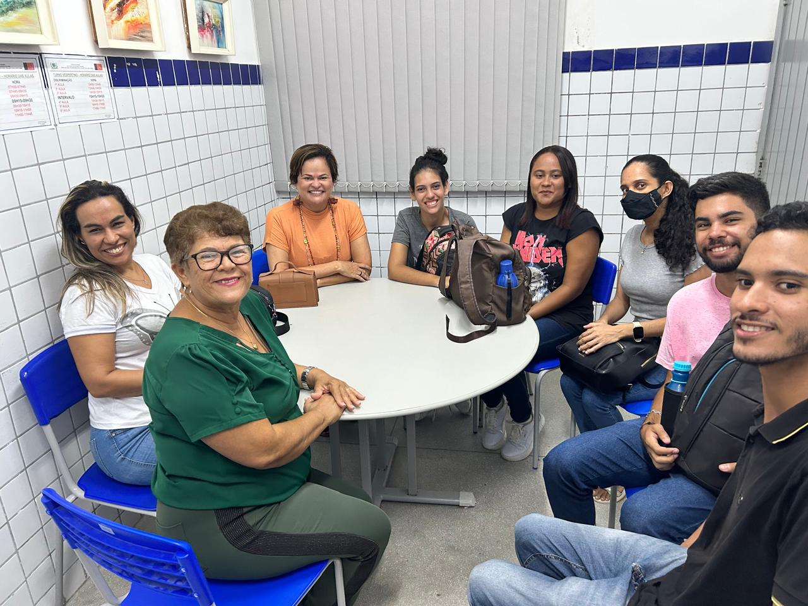
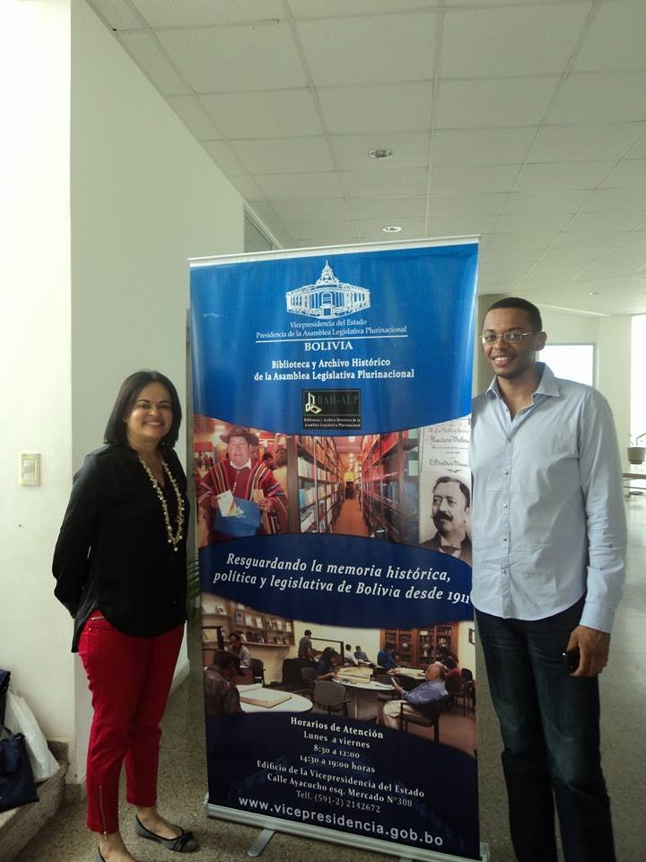
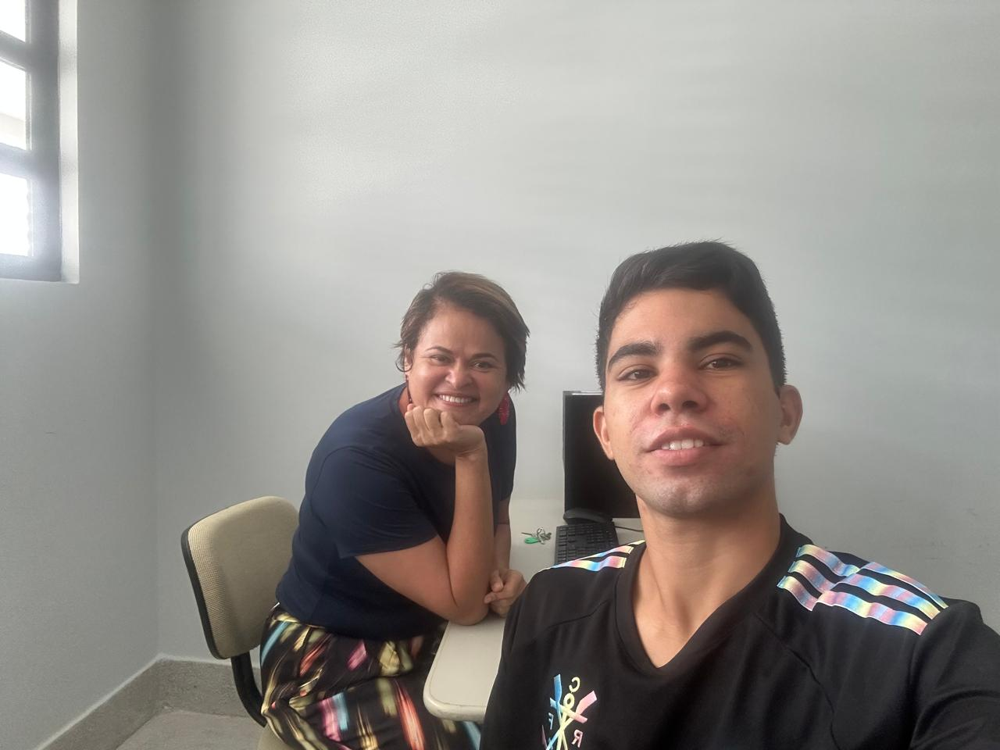
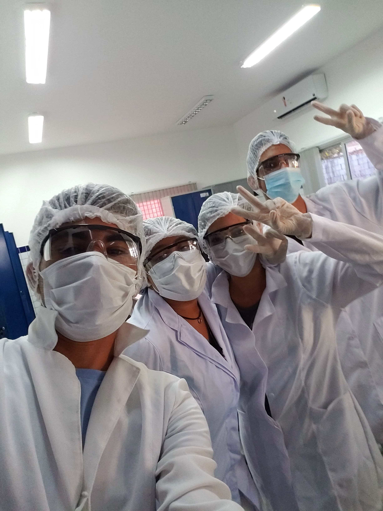
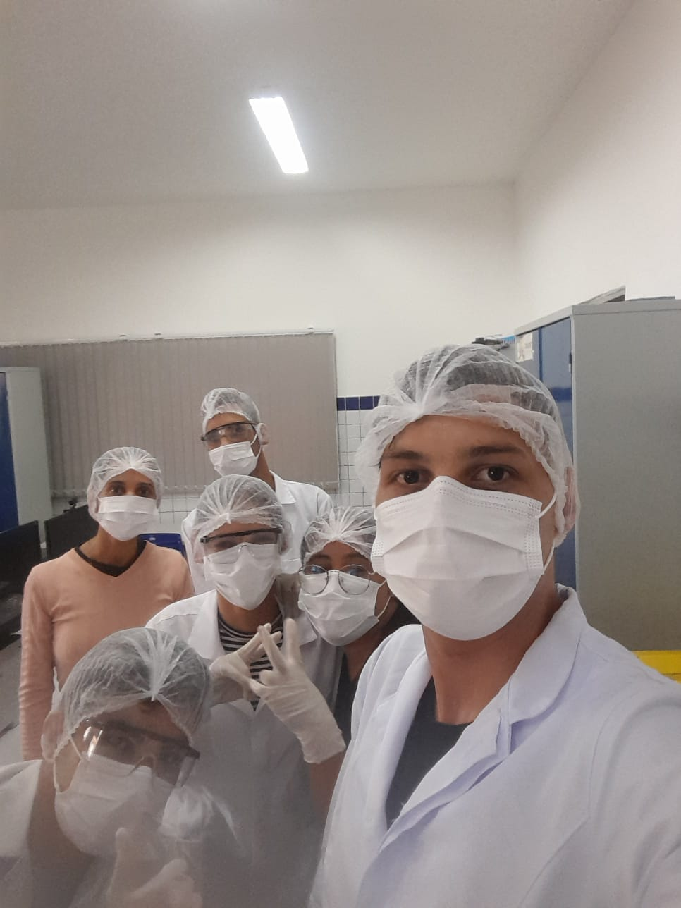
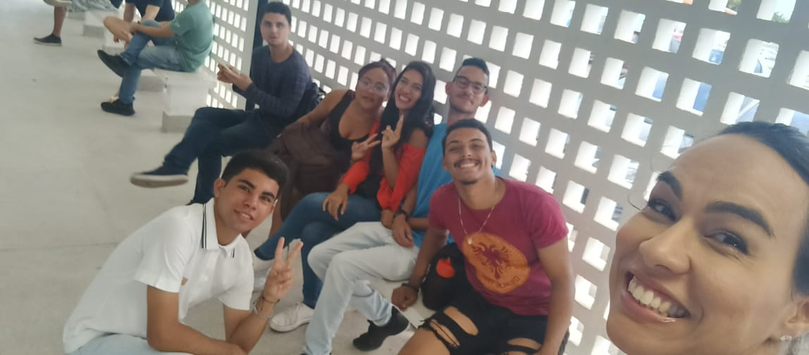

O Grupo de pesquisa em Arquivologia e Sociedade (GEAS-ARE), foi criado pela
profª DRª Francinete Fernandes com o intuito de produzir projetos científicos
ligados a área social da Arquivologia, e tem como objetivo ajudar as "bordas sociais".


integrantes do grupo atualmente
Francinete (orientadora)
Jackeline
Josivan
Bleubia Silva
Débora Nascimento
Francisco Fidelis
Gabriel Dias
Gabriel Roque
Gabriel Vitor
Mayra
Rayssa Cristina


LISTA DE PROJETOS E SEUS INTEGRANTES
Papéis da Vida: Arquivologia na trilha dos documentos de moradores
de rua na cidade de João pessoa-Paraíba
Victor Ferreira
Bleubia Silva
Débora Nascimento

Documentação de escravizados da paraíba: laboratório para a construção
de um software na área Arquivística
Gabriel Vitor
Francisco Fidelis
Gabriel Dias
Rayssa Cristina

Passado Presente: explorando os arquivos escolares da Escola Estadual Professor
Orlando Cavalcante Gomes